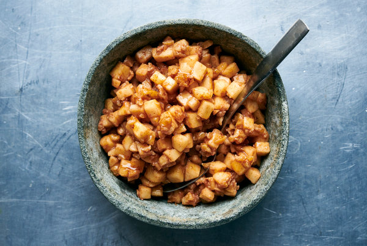

Charoset

Description:
Every family passover table has their own beloved charoset recipe. This apple walnut charoset will be familiar to ashkenazi palates, but is sure to be a hit with anyone.
Ingredients:
- 3 medium apples, peeled, cored, and finely diced
- 1 1/2 c walnuts, finely chopped
- 1/2 c Manischewitz or other sweet, kosher red wine
- 1 1/2 tsp cinnamon
- 1 tbsp packed brown sugar
Steps:
- In a large bowl, stir together ingredients. Cover until ready to serve.